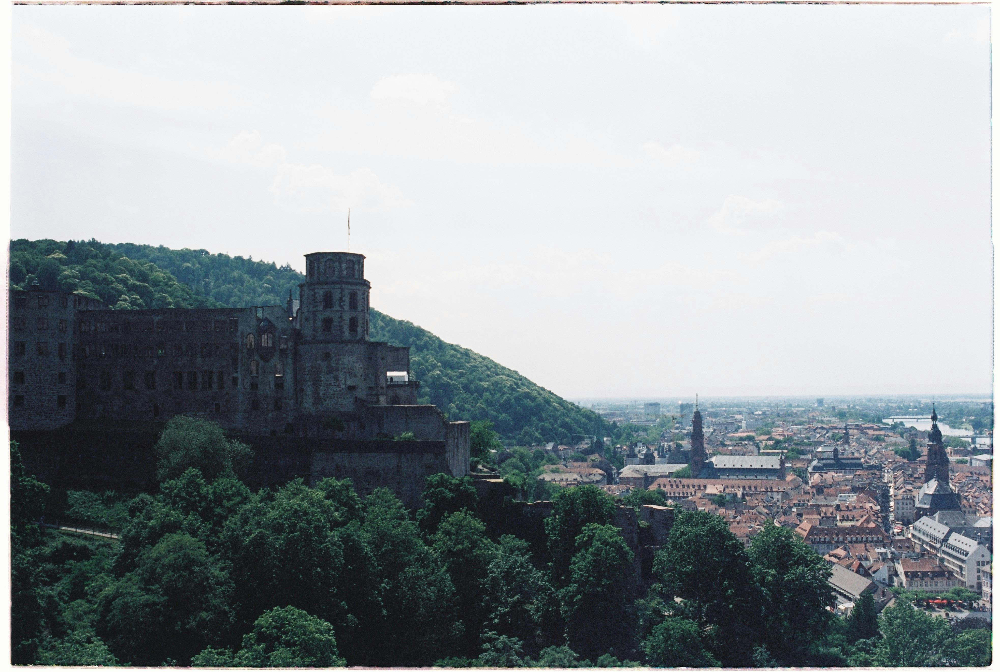
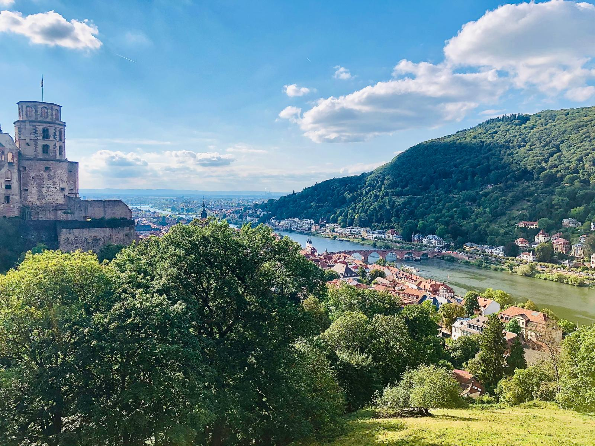

Unsere Touren
Altstadt & Schloss
Erkunden Sie die romantische Altstadt Heidelbergs und das weltberühmte Schloss.
Mehr erfahrenPhilosophenweg Spaziergang
Genießen Sie einen atemberaubenden Blick auf die Stadt von oben.
Bald wieder verfügbar!
Neckarwanderung
Entlang des Flusses durch Natur und Geschichte.
Bald wieder verfügbar!